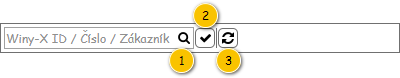

Uživatelské rozhraní poskytuje přístup k zobrazení přehledu smluv. Dále umožňuje využití nástrojů pro filtrování a řazení.
Rozložení obrazovky vychází z obecné struktury pro přehledy seznamů a číselníků, zde je tedy popsáno její použití.
Nadpis: Správa zákazníků – viz Struktura přehledu.
Text tlačítka: Smlouvy – viz Struktura přehledu.
Nadpis: Smlouvy – viz Struktura přehledu.

Pokud uživatel vjede myší na prvek nástrojové lišty, je zobrazen ToolTip. V rámci ToolTipu, pokud není uvedeno jinak, je zobrazen text ve sloupci Komponenta.
| Callout | Komponenta | Nadpis | Typ komponenty | Příklad hodnoty | Hodnota | Výchozí hodnota | Formát | Zpřístupněná | Viditelná | Chování | Validace | Poznámka |
|---|---|---|---|---|---|---|---|---|---|---|---|---|
| 1 | Textový filtr | – | Full Text Filter (viz Ovládací prvky třetích stran) SearchBox | – | – | – | Pokud není v rámci ovládacího prvku zadán hledaný text, jsou na pozadí (placeholder) vypsány názvy sloupců, podle kterých je filtrováno (viz sloupce Chování). Mezi jednotlivými názvy sloupců je použit oddělovač: „/“. Tento text je zobrazován i v rámci bublinkové nápovědy ovládacího prvku. Chování je pak řešeno v rámci použité komponenty.
| Vždy | Vždy | Psaním filtruje řádky dle sloupců:
Poznámka: Ve sloupcích je vyhledáváno fulltextově. | – | – |
| 2 | Jen platní | – | Button
| – | – | – | – | Vždy | Vždy | Filtruje pouze platné zaměstnance – hodnota atributu Platnost do je nevyplněna nebo je vyšší nebo rovna dnešnímu datu a zároveň hodnota atributu Platnost od je je nižší nebo rovna dnešnímu datu. | – | – |
| 3 | Obnovit data | – | Button
| – | – | – | – | Vždy | Vždy | Načte aktuální data pro tabulku. | – | – |
Pro zobrazení záznamů v přehledu je použita běžná tabulka, viz 700UI01: Komponenty – tabulka. Z toho vyplývají jak její základní vlastnosti, tak i výchozí nastavení (např. počet záznamů, které je možné označit).
Tabulka je implicitně řazena vzestupně dle sloupce Číslo smlouvy.
| Sloupec | Nadpis | Možnost editace | Komponenta | Datový typ | Příklad hodnoty | Hodnota | Výchozí hodnota | Formát | Možnosti sloupce | Zpřístupněný | Viditelný | Chování | Validace | Poznámka |
|---|---|---|---|---|---|---|---|---|---|---|---|---|---|---|
| Winy-X ID | Winy-X ID | Ne | TextBox | Celé číslo | 1 | Entita Rámcová smlouva. | – |
| Nikdy | Vždy | – | – | – | |
| Číslo smlouvy | Číslo | Ne | TextBox | Text | 123456 | Entita Rámcová smlouva. | – | <Číslo smlouvy> |
| Nikdy | Vždy | – | – | – |
| Provozovna | Provozovna | Ne | TextBox | Text | MP Bratislava | Entita Provozovna – atribut Provozovna entity Rámcová smlouva. | – |
| Nikdy | Vždy | – | – | – | |
| Zákazník | Zákazník | Ne | TextBox | Text | STRABAG s.r.o. | Entita Zákazník – atribut Zákazník entity Rámcová smlouva. | – |
| Nikdy | Vždy | – | – | – | |
| Adresa zákazníka | Adresa zákazníka | Ne | TextBox | Text | Mlynské Nivy 69/A, 82518 Bratislava | Entita Adresa – atribut Adresa sídla entity Zákazník – atribut Zákazník entity Rámcová smlouva. | – | Pokud není dostupné Číslo orientační:
Pokud není dostupné Číslo popisné:
|
| Nikdy | Vždy | – | – | – |
| Platnost od | Platnost od | Ne | TextBox | Datum | 2. 6. 2018 | Entita Rámcová smlouva. | – |
| Nikdy | Vždy | – | – | – | |
| Platnost do | Platnost do | Ne | TextBox | Datum | 31. 12. 2018 | Entita Rámcová smlouva. | – |
| Nikdy | Vždy | – | – | – |
Není.
Grafický návrh vychází z FLWW2 – Správa systému.
| Odkaz | Stručný popis změny |
|---|---|
| Nástrojová lišta tabulky přehledu | Revize komponenty pro fulltextový filtr (naznačeno modře). |
| Odkaz | Stručný popis změny/doplnění |
|---|---|
| Nástrojová lišta tabulky přehledu | Revize kontextové nabídky textového filtru (naznačeno modře). ID-054 |
| Odkaz | Stručný popis změny/doplnění |
|---|---|
| Tabulka s položkami přehledu | Doplněny obecné informace o použité tabulce (naznačeno modře). |
| Odkaz | Stručný popis změny/doplnění |
|---|---|
| Nástrojová lišta tabulky přehledu | Doplněna informace, co má být zobrazeno v rámci ToolTipu (naznačeno modře). |
| Tabulka s položkami přehledu | Doplněn popis dostupných funkcí pro práci s jednotlivými sloupci (naznačeno modře). |